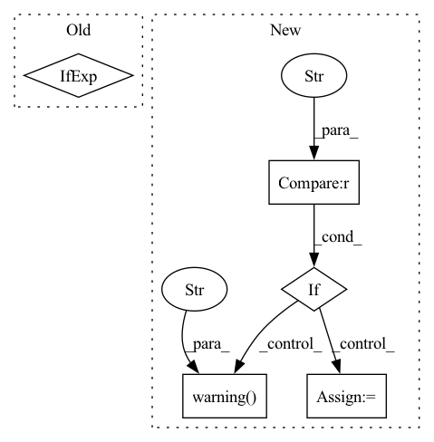

Pattern ID :31648
Before Change
if cfg.get("test"):
log.info("Starting testing!")
best_ckpt = trainer.checkpoint_callback.best_model_path
best_ckpt = None if best_ckpt == "" else best_ckpt
// if ckpt_path is None, init weights will be used
trainer.test(model=model, datamodule=datamodule, ckpt_path=best_ckpt)
log.info(f"Best ckpt path: {best_ckpt}")After Change
if cfg.get("test"):
log.info("Starting testing!")
ckpt_path = trainer.checkpoint_callback.best_model_path
if ckpt_path == "" :
log.warning("Best ckpt was not found! Using init weights for testing..." )
ckpt_path = None
trainer.test(model=model, datamodule=datamodule, ckpt_path=ckpt_path)
log.info(f"Best ckpt path: {ckpt_path}")
In pattern: SUPERPATTERN
Frequency: 3
Non-data size: 5
Instances Fragment ID: 92290496
Project Name: ashleve/lightning-hydra-template
Commit Name: f25683da5eb31e8b3eafa8affdf177e07834e1a8
Time: 2022-07-15
Author: ashlevegalaxy@gmail.com
File Name: src/tasks/train_task.py
M Class Name: AnonimousClass
N Class Name: AnonimousClass
M Method Name: train(1)
N Method Name: train(1)
M Parent Class:
N Parent Class:
M File Name: src/tasks/train_task.py
N File Name: src/tasks/train_task.py
M Start Line: 69
M End Line: 70
N Start Line: 69
N End Line: 73
Before Change
self.truncation_strategy = truncation_strategy
self.model_save_path = model_save_path
self._padding_strategy = "max_length" if self.max_length else "longest"
def __getstate__(self):
if self.model_save_path:After Change
self.max_length = max_length
self.model_save_path = model_save_path
if self.pooling_strategy == "auto" :
self.pooling_strategy = "cls"
self.logger.warning(
""auto" pooling_strategy is deprecated, Defaulting to "
" "cls" to maintain the old default behavior."
)
if self.pooling_strategy not in ["cls", "mean", "max", "min"]:
self.logger.error(
f"pooling strategy not found: {self.pooling_strategy}." Fragment ID: 92290493
Project Name: jina-ai/jina-hub
Commit Name: 1c2e2b83aefe41d83ee374f96df9642504e0358c
Time: 2020-12-29
Author: tadej.svetina@gmail.com
File Name: encoders/nlp/TransformerTFEncoder/__init__.py
M Class Name: TransformerTFEncoder
N Class Name: TransformerTFEncoder
M Method Name: __init__(7)
N Method Name: __init__(7)
M Parent Class: TFDevice,BaseEncoder
N Parent Class: TFDevice,BaseEncoder
M File Name: encoders/nlp/TransformerTFEncoder/__init__.py
N File Name: encoders/nlp/TransformerTFEncoder/__init__.py
M Start Line: 43
M End Line: 78
N Start Line: 23
N End Line: 67
Before Change
entities = json_line["entities"]
for entity in entities:
ent_text = text[entity["start_offset"] : entity["end_offset"]]
ent_type = "object" if entity["label"] not in label_maps["entity2id"].keys() else entity["label"]
ent = {"text": ent_text, "type": ent_type, "start_index": entity["start_offset"]}
id2ent[entity["id"]] = ent
entity_list.append(ent)After Change
for entity in entities:
ent_text = text[entity["start_offset"] : entity["end_offset"]]
if entity["label"] not in label_maps["entity2id"].keys():
if task_type == "entity_extraction" :
logger.warning(
"Found undefined label type. The setting of schema should contain all the label types in annotation file export from annotation platform."
)
continue
else:
ent_type = "object"
else:
ent_type = entity["label"]
ent = {"text": ent_text, "type": ent_type, "start_index": entity["start_offset"]} Fragment ID: 92290494
Project Name: paddlepaddle/paddlenlp
Commit Name: d28675d47ed566947793751dc8ca64c100ec2f40
Time: 2022-12-18
Author: 40840292+linjieccc@users.noreply.github.com
File Name: applications/information_extraction/text/data_distill/utils.py
M Class Name: AnonimousClass
N Class Name: AnonimousClass
M Method Name: doccano2distill(3)
N Method Name: doccano2distill(3)
M Parent Class:
N Parent Class:
M File Name: applications/information_extraction/text/data_distill/utils.py
N File Name: applications/information_extraction/text/data_distill/utils.py
M Start Line: 434
M End Line: 436
N Start Line: 434
N End Line: 446